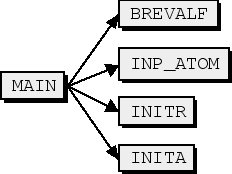

The initial data, which the user interactively enters is processed by inp_atom(), brevala(), the user have the choice to select options about the calculation:
All angular data is generated in brevala(), which first requests from the user data about the operators to be included, and sets ISPORB,ISOORB,ISPSPN,IORBORB,ICOLOM to true if the corresponding operators if requested.
|  |
Then, initial data about the type and the number of integrals is generated in genintbr():
genitbr() is an interface to comp_genitbr(), which performs the calculation of the integrals. comp_genitbr() is called twice, the first time, it only sweeps over all possible integrals without computing them, and the total number of integrals are determined. The total number of integrals is then used to allocate memory for intptr, value, which are correspondingly the arrays containing the integral and pointer data. In the next phase comp_genitbr() computes the integral data for all orbitals.
The main loop is over the entire configuration list and the data for matrix elements are generated by column. The interaction matrix is symmetric and only the lower or upper part needs to be evaluated. breitgg() generates the nonrelativistic hamiltonian assuming orthogonal orbitals. Thus the computational sequence is:
For column = 1 to ncfg
For row = column to ncfg
For each column, data is written to a set of files, described in 14.15, and further below:
DO jb = 1, ncfg
if(mod(jb,100).eq.0) write(ISCW,'(A,I5)') ' jb = ',jb
if(jb == ncfg) write(ISCW,'(A,I5)') ' jb = ',jb
CALL SHELLSJB(JB)
call BreitGG(NEW,NZERO,IFIRST,idg,skip,nze)
write(11) nih, (jan(i),i=1,nih);
write(12) nih, (ico(i),i=1,nih);
mycol = mycol + 1
jptr(mycol) = nij
end do
Figure 7.24 shows the steps of processing each configuration. All routines are from the angular library libang.a.